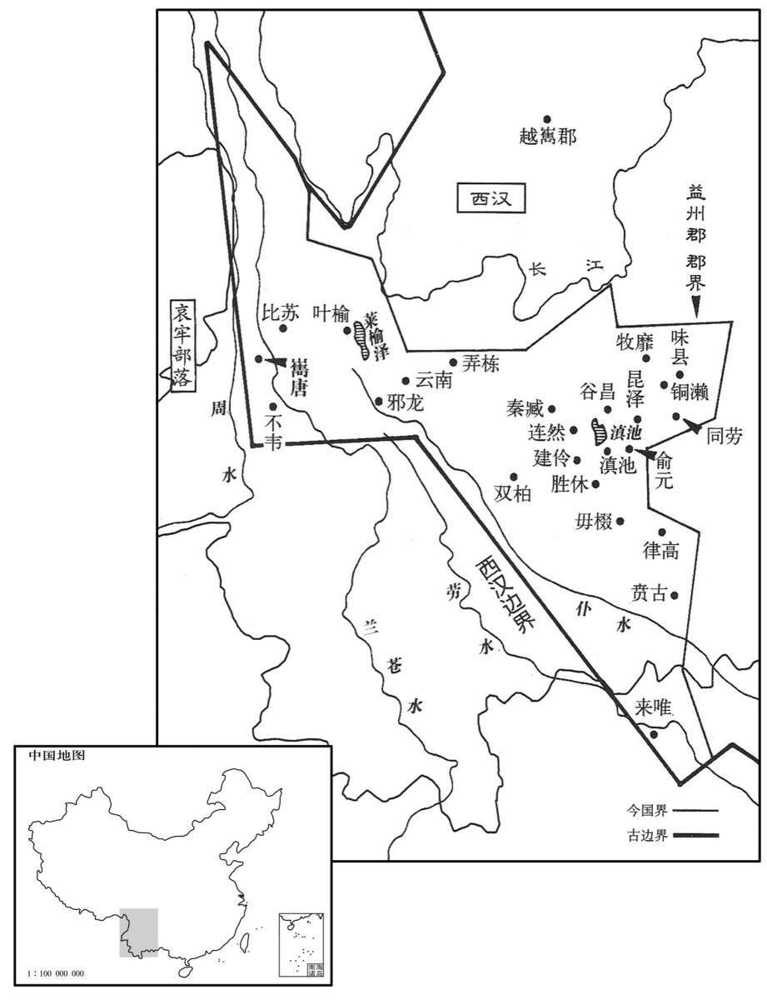
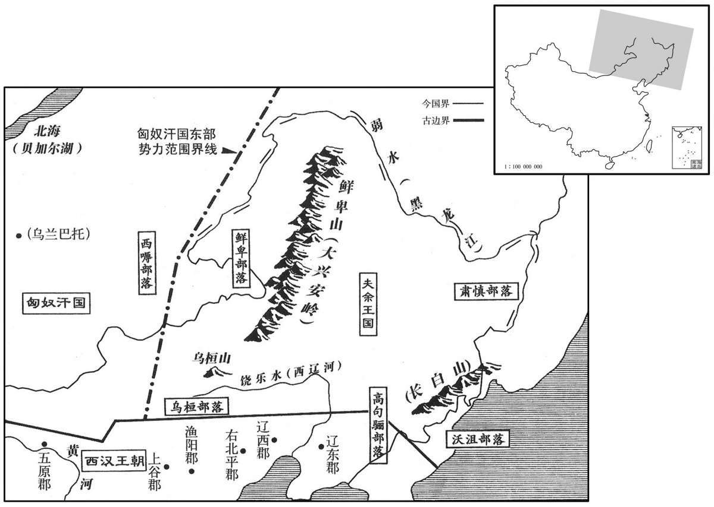

公元前86年资治通鉴：本年记事、原文与白话对照
按原书编年位置阅读；追叙和史论不等于本年发生的事件。白话采用所据译本，缺译不以生成译文补齐。
卷23 · 本年记事
公元前86年 · 汉孝昭皇帝始元元年
始元元年〔（乙未、前八六）〕
本年事件索引（现代整理）

本年形势与背景参考图

本年形势与背景参考图
夏，益州夷二十四邑、三万余人皆反。遣水衡都尉吕破〔【张：“破”作“辟”。】〕胡募吏民及发犍为、蜀郡奔命往击，大破之。〔犍为、蜀郡，皆属益州。犍为郡，唐泸、戎、嘉、眉、荣、资、简州地。蜀郡，唐成都府、彭、蜀、邛、雅、翼、茂州之地。应劭曰：旧时郡国皆有材官、骑士以赴急难；今夷反，常兵不足以讨之，故权发精勇，闻命奔走，故谓之奔命。李奇曰：平居发二十以上至五十为甲卒；今者五十以上，六十以下为奔命。奔命，言急也。师古曰：应说是。余据左传：子重、子反一岁七奔命。奔命者，救急之师，固不拘五十以上、六十以下也。犍，居言翻。〕
夏季，益州所属二十四个夷人村寨三万余人全部背叛汉朝。汉朝廷派水衡都尉吕破胡招募官吏和百姓从军，又征调犍为、蜀郡的武勇精壮之人前往征讨，大破叛军。
秋，七月，赦天下。
秋季，七月，大赦天下。
大雨，至于十月，渭桥绝。
天降大雨，一直持续到十月，渭桥被大水冲断。
武帝初崩，〔【章：甲十五行本作“初，武帝崩”；乙十一行本同；孔本同；退斋校同。】〕赐诸侯王玺书。〔左传：襄公在楚，季武子使公冶问玺书，追而与之，盖君臣通用也；秦、汉以来，惟至尊以为信。〕燕王旦得书不肯哭，曰：“玺书封小，〔张晏曰：文小则封小。〕京师疑有变。”遣幸臣寿西长、孙纵之、王孺等之长安，〔苏林曰：寿西，姓；长，名。师古曰：之，往也。〕以问礼仪为名，阴刺候朝廷事。〔刺，七亦翻，探也。〕及有诏褒赐旦钱三十万，益封万三千户，旦怒曰：“我当为帝，何赐也！”遂与宗室中山哀王子长、齐孝王孙泽等结谋，〔中山哀王昌，靖王胜子。齐孝王将闾，悼惠王肥子。〕诈言以武帝时受诏，得职吏事，修武备，备非常。〔如淳曰：诸侯不得治民、与职事，是以诈言受诏，得知职事，发兵为备也。〕郎中成轸谓旦曰：“大王失职，独可起而索，〔姓谱：成姓本自周文王，成伯之后，周有成肃公；又楚有令尹成得臣。师古曰：失职，谓当为汉嗣而不被用也。索，求也，音山客翻。〕不可坐而得也。大王壹起，国中虽女子皆奋臂随大王。”旦即与泽谋，为奸书，言：“少帝非武帝子，大臣所共立；天下宜共伐之！”使人传行郡国以摇动百姓。泽谋归发兵临菑，〔临淄，齐郡太守、青州刺史治所。〕杀青州刺史隽不疑。〔隽，辞兖翻。〕旦招来郡国奸人，赋敛铜铁作甲兵，数阅其车骑、材官卒，发民大猎以讲士马，须期日。〔师古曰：讲，习也。须，待也。余谓泽归临菑谋举兵，故旦阅兵以待期。数，所角翻；下同。〕郎中韩义等数谏旦，旦杀义等凡十五人。会瓶侯成知泽等谋，〔成，菑川靖王之子。班志，瓶，侯国，属琅琊郡。瓶，步丁翻。〕以告隽不疑。八月，不疑收捕泽等以闻。天子遣大鸿胪丞治，〔续汉志：大鸿胪丞，秩千石。胪，陵如翻。〕连引燕王。有诏，以燕王至亲，勿治；而泽等皆伏诛。迁隽不疑为京兆尹。〔百官表：武帝太初元年，改右内史为京兆尹。张晏曰：地绝高曰京。左传曰：莫之与京。十亿曰兆。尹，正也。师古曰：京，大也；兆者，众数；言大众所在，故云京兆也。郦道元曰：尹，正也，所以董正京畿、率先百郡也。孔颖达曰：释诂文曰：万亿曰兆。如依算法，亿之数有大小二法：其小数以十为等，十万为亿，十亿为兆也；其大数以万亿为等，万至万，是万之为亿；又从亿而数至万亿曰兆，亿亿曰秭。在亿、秭之间。〕
汉武帝去世时，朝廷以印有皇帝玉玺的正式诏书通知各诸侯王。燕王刘旦见到诏书后不肯哭泣，说道：“诏书的印封过小，我怀疑京师已发生变故。”于是派他宠信的臣僚寿西长、孙纵之、王孺等前往长安，以询问祭悼汉武帝的礼仪为借口，暗中刺探朝廷动态。及至汉昭帝下诏奖赏刘旦钱三十万，增加其封国人口一万三千户时，刘旦生气地说：“本来就应当由我作皇帝，用不着谁来赏赐我！”于是与皇室成员中山哀王之子刘长、齐孝王之孙刘泽等密谋共同反叛朝廷，还伪称在汉武帝生前曾得到诏书，允许他掌握其封国内各级官吏的任免权，整顿封国的军队，防备非常事变。郎中成轸对刘旦说：“大王失去皇位继承权，只能起来索取，坐着不动是得不到的。大王一旦起兵，燕国之内，既使是妇女也都会奋臂追随大王。”于是刘旦与刘泽密商，编制造谣文书，宣称：“如今的小皇帝并非武帝之子，而是由朝中大臣共同拥立的，天下应当共同讨伐！”派人到各郡国广为传发，以动摇百姓之心。刘泽计划返回齐国后从临发兵，杀死青州刺史隽不疑。刘旦在燕国招揽各地奸邪之徒，征敛民间铜铁来制造铠甲武器，又多次检阅燕国的车骑、材官等各类军队，征调百姓进行大规模行围打猎活动，以训练将士、马匹的作战能力，等待与刘泽约定的日期一到，共同举兵叛乱。郎中韩义等多次劝阻刘旦，刘旦将韩义等共十五名官员处死。就在此时，瓶侯刘成得到刘泽谋反计划，便通知了隽不疑。八月，隽不疑逮捕了刘泽等人，并奏闻朝廷。汉昭帝王派大鸿胪丞负责处理此事。审讯中，燕王刘旦被供出。汉昭帝下诏，以燕王为至亲，下令不许追究，而将刘泽等全部处死。隽不疑调任京兆尹。
不疑为京兆尹，吏民敬其威信。每行县、录囚徒还，〔师古曰：省录之，知其情状有冤滞与否也。今云虑囚，本“录”声之去者耳，音力具翻。而近俗不晓其意，讹其文遂为思虑之虑，失其源也甚矣。行，下孟翻。〕其母辄问不疑：“有所平反？活几何人？”即不疑多有所平反，〔毛晃曰：平反，理正幽枉也。反，音幡。〕母喜笑异于他时；或无所出，母怒，为不食。〔为，于伪翻。〕故不疑为吏，严而不残。
隽不疑担任京兆尹，官吏和百姓对他的威信都很敬服。每当他巡视各县，审查囚徒的判处情况归来，他的母亲总要问他：“给受冤屈的人平反了吗？救活了多少人？”如隽不疑为很多受冤屈的人平了反，其母便比平时高兴；如没有平反之事，其母便生气得不肯吃饭。因此，隽不疑为官，虽然执法严格，却并不残忍。
九月，丙子，秺敬侯金日磾薨。〔秺，音妒。磾，丁奚翻。〕初，武帝病，有遗诏，封金日磾为秺侯，上官桀为安阳侯，〔恩泽侯表，安阳侯食邑于河内之荡阴。水经注：陕县有安阳城，武帝封上官桀为侯国。〕霍光为博陆侯；〔文颖曰：博，大；陆，平；取其嘉名，无此县也；食邑于北海、河间、东郡。师古曰：盖亦即乡聚之名以为国号，非必县也。博陆初封，食北海、河间；后益封，食东郡。〕皆以前捕反者马何罗等功封。〔捕马何罗事见上卷武帝后元元年。〕日磾以帝少，不受封，〔少，诗沼翻。〕光等亦不敢受。及日磾病困，光白封，日磾卧受印绶；一日薨。日磾两子赏、建俱侍中，与帝略同年，共卧起。赏为奉车，建驸马都尉。及赏嗣侯，佩两绶，上谓霍将军曰：“金氏兄弟两人，不可使俱两绶邪？”对曰：“赏自嗣父为侯耳。”上笑曰：“侯不在我与将军乎？”对曰：“先帝之约，有功乃得封侯。”遂止。
九月丙子（初二），侯金日去世。当初汉武帝病危时，曾留下遗诏，封金日为侯，上官桀为安阳侯，霍光为博陆侯，都是因为先前逮捕叛逆者马何罗等人之功而赐与封爵。金日以新皇帝年纪幼小为理由，不肯接受封爵，霍光等也不敢接受。等到金日病重时，霍光才将武帝临终时封他们三人为侯的事报告汉昭帝，于是金日躺在病床上接受了侯的印信和绶带，一天后去世。金日的两个儿子金赏、金建都担任侍中，与汉昭帝年龄差不多一般大小，起床、睡觉都在一起。金赏的官职是奉车都尉，金建是驸马都尉。后来金赏继承了父亲金日的侯爵，佩戴两种绶带，汉昭帝便对霍光说道：“金氏兄弟二人，不能让他们都佩戴两种绶带吗？”霍光回答说：“只能由金赏一人继承他父亲的侯爵。”汉昭帝笑着说：“封侯不是由我和将军决定吗？”霍光说：“根据先皇的约定，对国家有功的人才能封侯。”于是汉昭帝作罢。
闰月，遣故廷尉王平等五人持节行郡国，举贤良，问民疾苦、冤、失职者。〔行，下孟翻。〕
闰十月，汉昭帝派前任廷尉王平等五人携带皇帝符节巡视各郡、国，举荐贤良人士，察问民间疾苦、冤屈和地方官是否有失职行为。
冬，无冰。
冬季，气候温暖，不结冰。